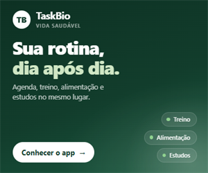
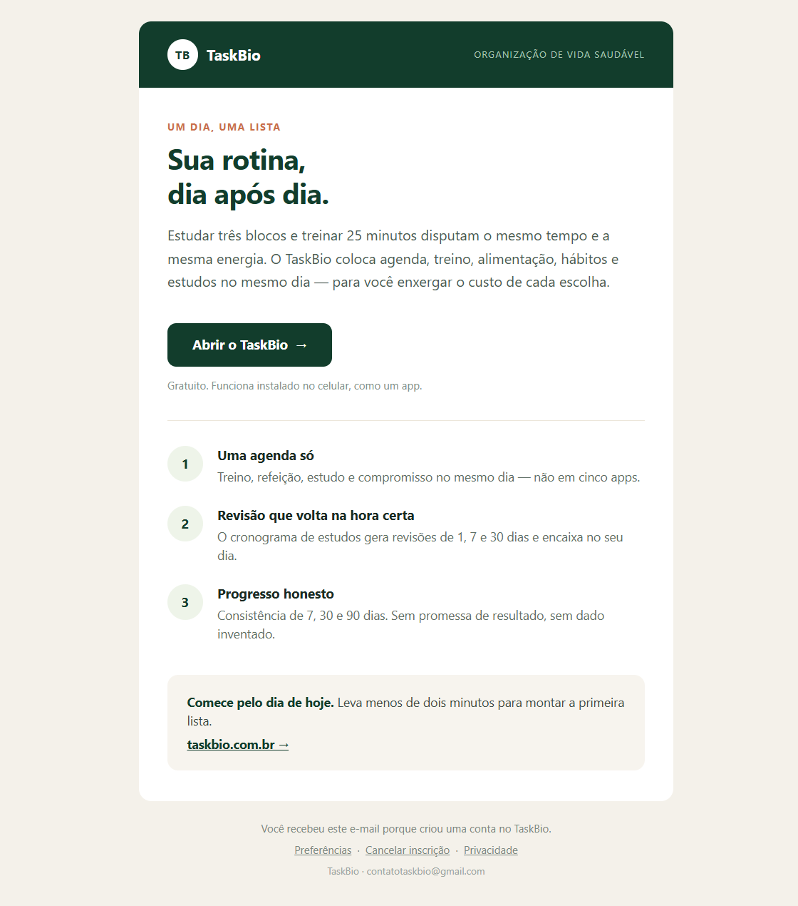

Retângulo médio
300×250. A peça mais usada em display: marca, promessa e CTA no mesmo quadro.
Abrir banner →Banner 300×250, leaderboard 728×90 e um e-mail de 600 px feitos para veiculação real: arquivo único, sem build, sem framework, sem CDN e abaixo de 5 KB por banner.

300×250. A peça mais usada em display: marca, promessa e CTA no mesmo quadro.
Abrir banner →728×90. Formato horizontal para topo de site, com leitura em menos de dois segundos.
Abrir banner →
600 px, tabela e CSS inline. Estrutura que sobrevive ao Gmail, Outlook e apps móveis.
Abrir e-mail →Só transform e opacity, que a GPU compõe sem refazer layout ou pintura.
Marca em CSS, fonte do sistema e nenhuma imagem externa. Nada para o veículo bloquear.
window.clickTag permite que a mídia aponte o clique sem editar o criativo.
Tabela, CSS inline, 600 px e botão com bgcolor para renderizar no Outlook.